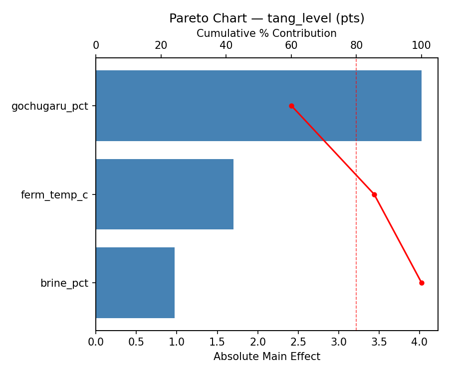
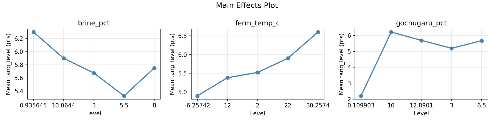
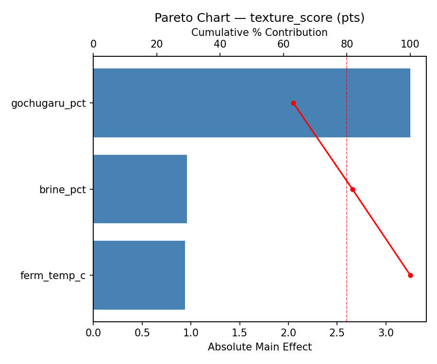
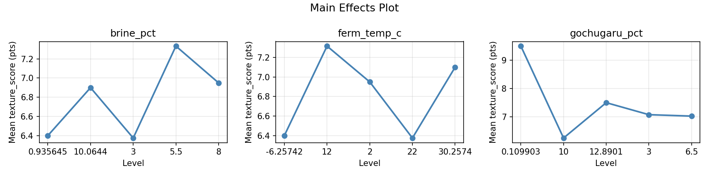
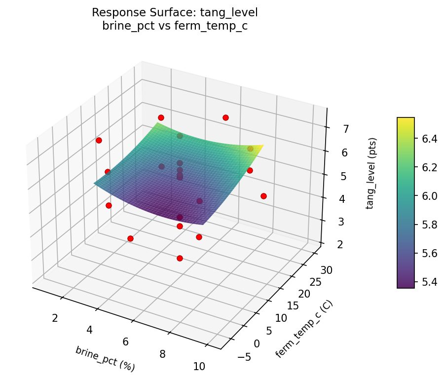
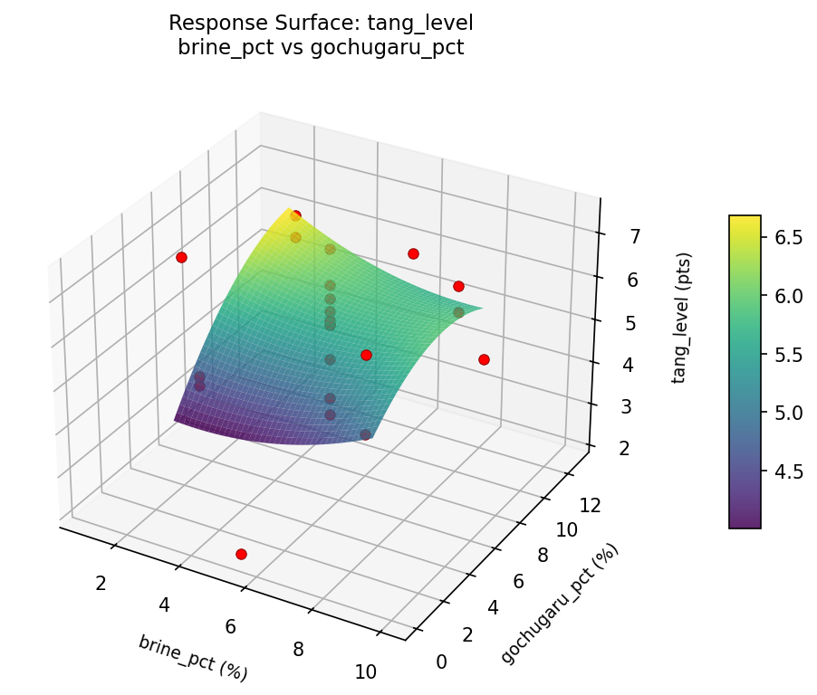
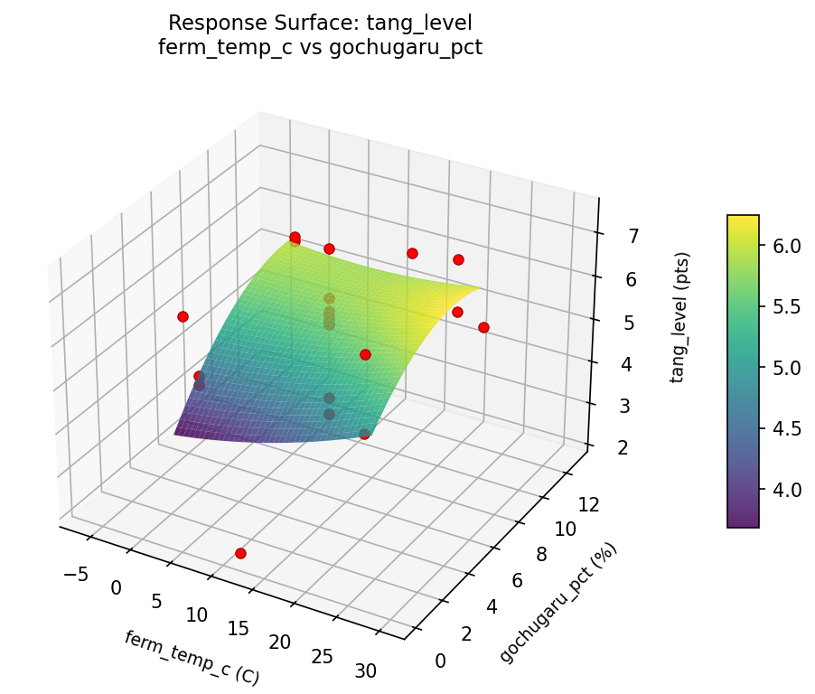
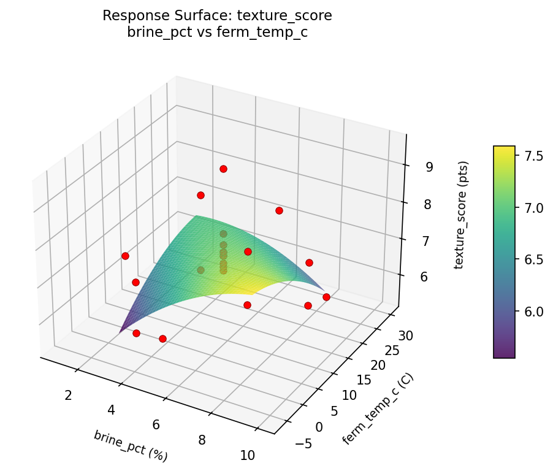
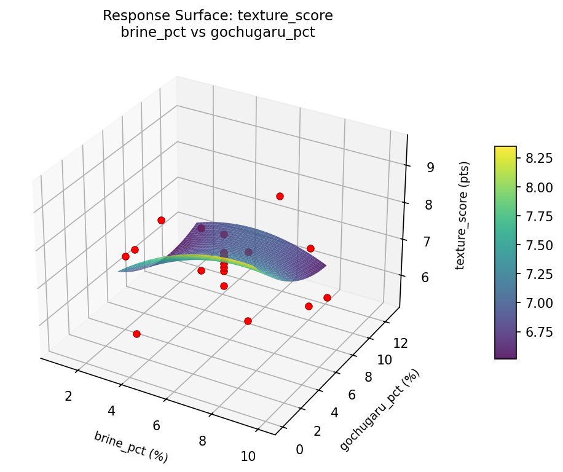
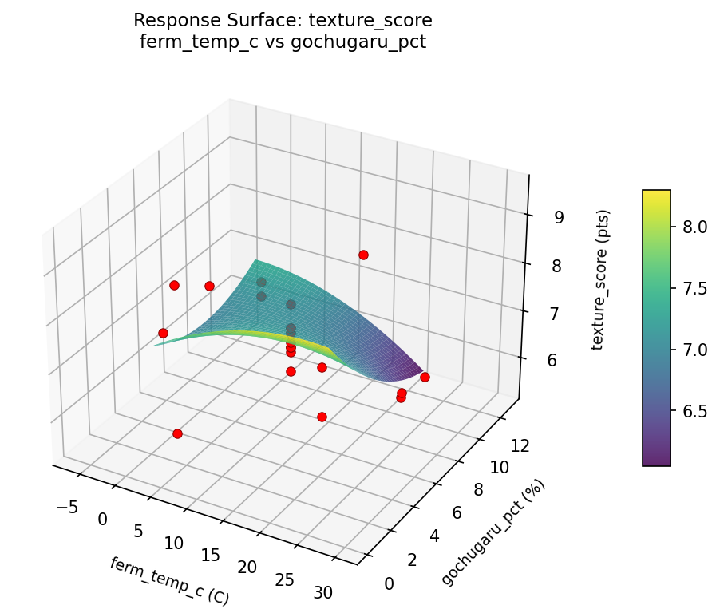

Summary
This experiment investigates kimchi fermentation timing. Central composite design to optimize tang level and texture by tuning salt brine strength, fermentation temperature, and gochugaru amount.
The design varies 3 factors: brine pct (%), ranging from 3 to 8, ferm temp c (C), ranging from 2 to 22, and gochugaru pct (%), ranging from 3 to 10. The goal is to optimize 2 responses: tang level (pts) (maximize) and texture score (pts) (maximize). Fixed conditions held constant across all runs include cabbage type = napa, garlic pct = 3.
A Central Composite Design (CCD) was selected to fit a full quadratic response surface model, including curvature and interaction effects. With 3 factors this produces 22 runs including center points and axial (star) points that extend beyond the factorial range.
Quadratic response surface models were fitted to capture potential curvature and factor interactions. The RSM contour plots below visualize how pairs of factors jointly affect each response.
Key Findings
For tang level, the most influential factors were gochugaru pct (60.1%), ferm temp c (25.4%), brine pct (14.6%). The best observed value was 7.4 (at brine pct = 5.5, ferm temp c = 12, gochugaru pct = 12.8901).
For texture score, the most influential factors were gochugaru pct (63.1%), brine pct (18.6%), ferm temp c (18.3%). The best observed value was 9.5 (at brine pct = 10.0644, ferm temp c = 12, gochugaru pct = 6.5).
Recommended Next Steps
- Run confirmation experiments at the predicted optimal settings to validate the model.
- Consider whether any fixed factors should be varied in a future study.
Experimental Setup
Factors
| Factor | Low | High | Unit |
|---|
brine_pct | 3 | 8 | % |
ferm_temp_c | 2 | 22 | C |
gochugaru_pct | 3 | 10 | % |
Fixed: cabbage_type = napa, garlic_pct = 3
Responses
| Response | Direction | Unit |
|---|
tang_level | ↑ maximize | pts |
texture_score | ↑ maximize | pts |
Configuration
{
"metadata": {
"name": "Kimchi Fermentation Timing",
"description": "Central composite design to optimize tang level and texture by tuning salt brine strength, fermentation temperature, and gochugaru amount"
},
"factors": [
{
"name": "brine_pct",
"levels": [
"3",
"8"
],
"type": "continuous",
"unit": "%"
},
{
"name": "ferm_temp_c",
"levels": [
"2",
"22"
],
"type": "continuous",
"unit": "C"
},
{
"name": "gochugaru_pct",
"levels": [
"3",
"10"
],
"type": "continuous",
"unit": "%"
}
],
"fixed_factors": {
"cabbage_type": "napa",
"garlic_pct": "3"
},
"responses": [
{
"name": "tang_level",
"optimize": "maximize",
"unit": "pts"
},
{
"name": "texture_score",
"optimize": "maximize",
"unit": "pts"
}
],
"settings": {
"operation": "central_composite",
"test_script": "use_cases/244_kimchi_ferment/sim.sh"
}
}
Experimental Matrix
The Central Composite Design produces 22 runs. Each row is one experiment with specific factor settings.
| Run | brine_pct | ferm_temp_c | gochugaru_pct |
|---|
| 1 | 5.5 | 12 | 6.5 |
| 2 | 8 | 2 | 10 |
| 3 | 3 | 22 | 3 |
| 4 | 5.5 | 30.2574 | 6.5 |
| 5 | 5.5 | 12 | 6.5 |
| 6 | 0.935645 | 12 | 6.5 |
| 7 | 5.5 | 12 | 0.109903 |
| 8 | 5.5 | 12 | 6.5 |
| 9 | 8 | 22 | 3 |
| 10 | 10.0644 | 12 | 6.5 |
| 11 | 5.5 | 12 | 6.5 |
| 12 | 5.5 | -6.25742 | 6.5 |
| 13 | 5.5 | 12 | 6.5 |
| 14 | 3 | 2 | 10 |
| 15 | 5.5 | 12 | 6.5 |
| 16 | 8 | 2 | 3 |
| 17 | 5.5 | 12 | 12.8901 |
| 18 | 8 | 22 | 10 |
| 19 | 5.5 | 12 | 6.5 |
| 20 | 3 | 2 | 3 |
| 21 | 3 | 22 | 10 |
| 22 | 5.5 | 12 | 6.5 |
Step-by-Step Workflow
1
Preview the design
$ python doe.py info --config use_cases/244_kimchi_ferment/config.json
2
Generate the runner script
$ python doe.py generate --config use_cases/244_kimchi_ferment/config.json \
--output use_cases/244_kimchi_ferment/results/run.sh --seed 42
3
Execute the experiments
$ bash use_cases/244_kimchi_ferment/results/run.sh
4
Analyze results
$ python doe.py analyze --config use_cases/244_kimchi_ferment/config.json
5
Get optimization recommendations
$ python doe.py optimize --config use_cases/244_kimchi_ferment/config.json
6
Generate the HTML report
$ python doe.py report --config use_cases/244_kimchi_ferment/config.json \
--output use_cases/244_kimchi_ferment/results/report.html
Real-World Experiment Workflow
ℹ
Physical Fermentation Experiment? Use the Manual Workflow
Fermentation experiments involve living cultures, temperature-sensitive biological processes, and flavors that must be tasted and measured. The simulation script above is for demonstration. For your real experiments, use record, status, and export-worksheet.
$ python doe.py export-worksheet --config use_cases/244_kimchi_ferment/config.json \
--format csv --output worksheet.csv
$ python doe.py status --config use_cases/244_kimchi_ferment/config.json
$ python doe.py record --config use_cases/244_kimchi_ferment/config.json --run 1
$ python doe.py analyze --config use_cases/244_kimchi_ferment/config.json --partial
$ python doe.py analyze --config use_cases/244_kimchi_ferment/config.json
$ python doe.py optimize --config use_cases/244_kimchi_ferment/config.json
$ python doe.py report --config use_cases/244_kimchi_ferment/config.json \
--output report.html
✔
Works Without a Test Script
The analysis pipeline doesn't care how results were produced. Record your measurements with record, and the full analysis, optimization, and reporting pipeline works identically. Use --partial to get early insights before all runs are complete.
Features Exercised
| Feature | Value |
|---|
| Design type | central_composite |
| Factor types | continuous (all 3) |
| Arg style | double-dash |
| Responses | 2 (tang_level ↑, texture_score ↑) |
| Total runs | 22 |
Analysis Results
Generated from actual experiment runs using the DOE Helper Tool.
Response: tang_level
Top factors: gochugaru_pct (60.1%), ferm_temp_c (25.4%), brine_pct (14.6%).
Pareto Chart

Main Effects Plot

Response: texture_score
Top factors: gochugaru_pct (63.1%), brine_pct (18.6%), ferm_temp_c (18.3%).
Pareto Chart

Main Effects Plot

Response Surface Plots
3D surfaces fitted with quadratic RSM. Red dots are observed data points.
tang level brine pct vs ferm temp c

tang level brine pct vs gochugaru pct

tang level ferm temp c vs gochugaru pct

texture score brine pct vs ferm temp c

texture score brine pct vs gochugaru pct

texture score ferm temp c vs gochugaru pct

Full Analysis Output
RSM surface: rsm_tang_level_brine_pct_vs_ferm_temp_c.png
RSM surface: rsm_tang_level_brine_pct_vs_gochugaru_pct.png
RSM surface: rsm_tang_level_ferm_temp_c_vs_gochugaru_pct.png
RSM surface: rsm_texture_score_brine_pct_vs_ferm_temp_c.png
RSM surface: rsm_texture_score_brine_pct_vs_gochugaru_pct.png
RSM surface: rsm_texture_score_ferm_temp_c_vs_gochugaru_pct.png
=== Main Effects: tang_level ===
Factor Effect Std Error % Contribution
--------------------------------------------------------------
gochugaru_pct 4.0250 0.2517 60.1%
ferm_temp_c 1.7000 0.2517 25.4%
brine_pct 0.9750 0.2517 14.6%
=== Summary Statistics: tang_level ===
brine_pct:
Level N Mean Std Min Max
------------------------------------------------------------
0.935645 1 6.3000 0.0000 6.3000 6.3000
10.0644 1 5.9000 0.0000 5.9000 5.9000
3 4 5.6750 1.0340 4.7000 6.8000
5.5 12 5.3250 1.4353 2.2000 7.4000
8 4 5.7500 0.7937 4.7000 6.5000
ferm_temp_c:
Level N Mean Std Min Max
------------------------------------------------------------
-6.25742 1 4.9000 0.0000 4.9000 4.9000
12 12 5.3833 1.4173 2.2000 7.4000
2 4 5.5250 0.8421 4.7000 6.3000
22 4 5.9000 0.9487 4.7000 6.8000
30.2574 1 6.6000 0.0000 6.6000 6.6000
gochugaru_pct:
Level N Mean Std Min Max
------------------------------------------------------------
0.109903 1 2.2000 0.0000 2.2000 2.2000
10 4 6.2250 0.4924 5.6000 6.8000
12.8901 1 5.7000 0.0000 5.7000 5.7000
3 4 5.2000 0.8718 4.7000 6.5000
6.5 12 5.6833 1.0659 3.6000 7.4000
=== Main Effects: texture_score ===
Factor Effect Std Error % Contribution
--------------------------------------------------------------
gochugaru_pct 3.2500 0.1964 63.1%
brine_pct 0.9583 0.1964 18.6%
ferm_temp_c 0.9417 0.1964 18.3%
=== Summary Statistics: texture_score ===
brine_pct:
Level N Mean Std Min Max
------------------------------------------------------------
0.935645 1 6.4000 0.0000 6.4000 6.4000
10.0644 1 6.9000 0.0000 6.9000 6.9000
3 4 6.3750 1.0782 5.4000 7.7000
5.5 12 7.3333 0.7679 6.4000 9.5000
8 4 6.9500 1.2369 5.5000 8.5000
ferm_temp_c:
Level N Mean Std Min Max
------------------------------------------------------------
-6.25742 1 6.4000 0.0000 6.4000 6.4000
12 12 7.3167 0.7756 6.4000 9.5000
2 4 6.9500 1.2715 5.4000 8.5000
22 4 6.3750 1.0372 5.5000 7.7000
30.2574 1 7.1000 0.0000 7.1000 7.1000
gochugaru_pct:
Level N Mean Std Min Max
------------------------------------------------------------
0.109903 1 9.5000 0.0000 9.5000 9.5000
10 4 6.2500 0.8185 5.5000 7.1000
12.8901 1 7.5000 0.0000 7.5000 7.5000
3 4 7.0750 1.3376 5.4000 8.5000
6.5 12 7.0250 0.3911 6.4000 7.8000
Pareto chart (tang_level): use_cases/244_kimchi_ferment/results/analysis/pareto_tang_level.png
Pareto chart (texture_score): use_cases/244_kimchi_ferment/results/analysis/pareto_texture_score.png
Main effects (tang_level): use_cases/244_kimchi_ferment/results/analysis/main_effects_tang_level.png
Main effects (texture_score): use_cases/244_kimchi_ferment/results/analysis/main_effects_texture_score.png
Optimization Recommendations
=== Optimization: tang_level ===
Direction: maximize
Best observed run: #18
brine_pct = 5.5
ferm_temp_c = 12
gochugaru_pct = 12.8901
Value: 7.4
RSM Model (linear, R² = 0.0897, Adj R² = -0.0621):
Coefficients:
intercept +5.5364
brine_pct -0.3266
ferm_temp_c -0.0124
gochugaru_pct +0.2685
RSM Model (quadratic, R² = 0.4200, Adj R² = -0.0150):
Coefficients:
intercept +5.3311
brine_pct -0.3266
ferm_temp_c -0.0124
gochugaru_pct +0.2685
brine_pct*ferm_temp_c +0.4250
brine_pct*gochugaru_pct +0.1250
ferm_temp_c*gochugaru_pct +0.0250
brine_pct^2 -0.3474
ferm_temp_c^2 +0.1926
gochugaru_pct^2 +0.4626
Curvature analysis:
gochugaru_pct coef=+0.4626 convex (has a minimum)
brine_pct coef=-0.3474 concave (has a maximum)
ferm_temp_c coef=+0.1926 convex (has a minimum)
Notable interactions:
brine_pct*ferm_temp_c coef=+0.4250 (synergistic)
Predicted optimum (from quadratic model):
brine_pct = 5.5
ferm_temp_c = 12
gochugaru_pct = 12.8901
Predicted value: 7.3635
Model quality: Weak fit — consider adding center points or using a different design.
Factor importance:
1. brine_pct (effect: 3.8, contribution: 58.1%)
2. gochugaru_pct (effect: 2.2, contribution: 34.1%)
3. ferm_temp_c (effect: 0.5, contribution: 7.8%)
=== Optimization: texture_score ===
Direction: maximize
Best observed run: #12
brine_pct = 10.0644
ferm_temp_c = 12
gochugaru_pct = 6.5
Value: 9.5
RSM Model (linear, R² = 0.1317, Adj R² = -0.0130):
Coefficients:
intercept +7.0273
brine_pct +0.2487
ferm_temp_c +0.2991
gochugaru_pct -0.0934
RSM Model (quadratic, R² = 0.3373, Adj R² = -0.1597):
Coefficients:
intercept +6.8023
brine_pct +0.2487
ferm_temp_c +0.2991
gochugaru_pct -0.0934
brine_pct*ferm_temp_c -0.2875
brine_pct*gochugaru_pct +0.2875
ferm_temp_c*gochugaru_pct +0.0375
brine_pct^2 +0.3375
ferm_temp_c^2 -0.0075
gochugaru_pct^2 +0.0075
Curvature analysis:
brine_pct coef=+0.3375 convex (has a minimum)
gochugaru_pct coef=+0.0075 negligible curvature
ferm_temp_c coef=-0.0075 negligible curvature
Predicted optimum (from linear model):
brine_pct = 8
ferm_temp_c = 22
gochugaru_pct = 3
Predicted value: 7.6684
Model quality: Weak fit — consider adding center points or using a different design.
Factor importance:
1. brine_pct (effect: 2.7, contribution: 58.0%)
2. ferm_temp_c (effect: 1.3, contribution: 28.2%)
3. gochugaru_pct (effect: 0.6, contribution: 13.8%)